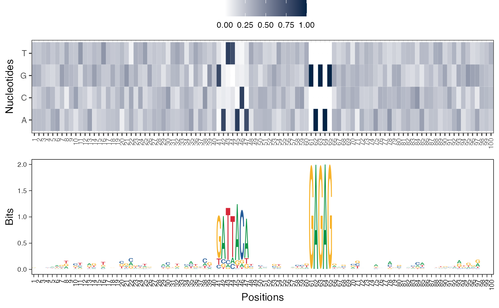

The given features matrix is visualized as a paired heatmap and sequence logo where the positions are aligned for better visualization., or as a single heatmap or as a single sequence logo.
viz_bas_vec(
feat_mat,
ptype = c("heatmap", "seqlogo"),
method = "bits",
pos_lab = NULL,
pdf_name = NULL,
add_pseudo_counts = FALSE,
sinuc_or_dinuc = "sinuc",
fixed_coord = FALSE
)The features matrix (basis vectors matrix) from seqArchR.
Character vector of length one or two. Specify just one of "heatmap" or "seqlogo" to visualize the basis vectors as such, or specify a vector of length two for plotting both, heatmap and seqlogo. These are then arranged one below the other, the first on top and the second under it.
Specify either of "custom", "bits", or "probability" for plotting sequence logo. Default is "bits".
Labels for sequence positions, should be of same length as that of the sequences. Default value is NULL, when the positions are labeled from 1 to the length of the sequences.
Filename to save the plot, also provide the extension.
Logical, taking values TRUE or FALSE, default set to FALSE. Setting it to TRUE will enable adding pseudo-counts to the features matrix.
"sinuc" or "dinuc" for choosing between mono- and dinucleotide profiles respectively.
Set this to TRUE to use a fixed aspect ratio for the plot irrestive of the width and height of the PDF. Default is FALSE.
nothing
Other visualization functions:
viz_pwm(),
viz_seqs_acgt_mat()
res <- readRDS(system.file("extdata", "example_seqArchRresult.rds",
package = "seqArchR", mustWork = TRUE))
# Visualize basis vectors at iteration 1 of seqArchR result as heatmap and
# sequence logo
viz_bas_vec(feat_mat = get_clBasVec_m(res,iter=1), sinuc_or_dinuc = "dinuc",
ptype = c("heatmap", "seqlogo"))
#> Warning: `guides(<scale> = FALSE)` is deprecated. Please use `guides(<scale> = "none")` instead.
#> Scale for 'x' is already present. Adding another scale for 'x', which will
#> replace the existing scale.
#> Warning: `guides(<scale> = FALSE)` is deprecated. Please use `guides(<scale> = "none")` instead.
#> Scale for 'x' is already present. Adding another scale for 'x', which will
#> replace the existing scale.
#> Warning: `guides(<scale> = FALSE)` is deprecated. Please use `guides(<scale> = "none")` instead.
#> Scale for 'x' is already present. Adding another scale for 'x', which will
#> replace the existing scale.
#> [[1]]

#>
#> [[2]]
#>
#> [[3]]
#>
# Visualize basis vectors at iteration 1 of seqArchR result as sequence logos
viz_bas_vec(feat_mat = get_clBasVec_m(res,iter=1), ptype = "seqlogo",
sinuc_or_dinuc = "dinuc")
#> Warning: `guides(<scale> = FALSE)` is deprecated. Please use `guides(<scale> = "none")` instead.
#> Scale for 'x' is already present. Adding another scale for 'x', which will
#> replace the existing scale.
#> Warning: `guides(<scale> = FALSE)` is deprecated. Please use `guides(<scale> = "none")` instead.
#> Scale for 'x' is already present. Adding another scale for 'x', which will
#> replace the existing scale.
#> Warning: `guides(<scale> = FALSE)` is deprecated. Please use `guides(<scale> = "none")` instead.
#> Scale for 'x' is already present. Adding another scale for 'x', which will
#> replace the existing scale.
#> [[1]]
#>
#> [[2]]
#>
#> [[3]]
#>
# Visualizing basis vector for a single cluster as a heatmap
viz_bas_vec(feat_mat = as.matrix(get_clBasVec_m(res,iter=1)[,3]),
ptype = "heatmap", sinuc_or_dinuc = "dinuc")
#> [[1]]
#>